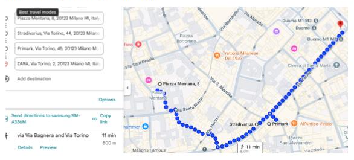

Milan
Via Torino:
zona comercial con marcas conocidas como
Primark, Zara y Stradivarius
.
Via Monte Napoleone:
la calle más exclusiva de Milán, famosa por sus tiendas de lujo y alta moda.

← Volver al inicio